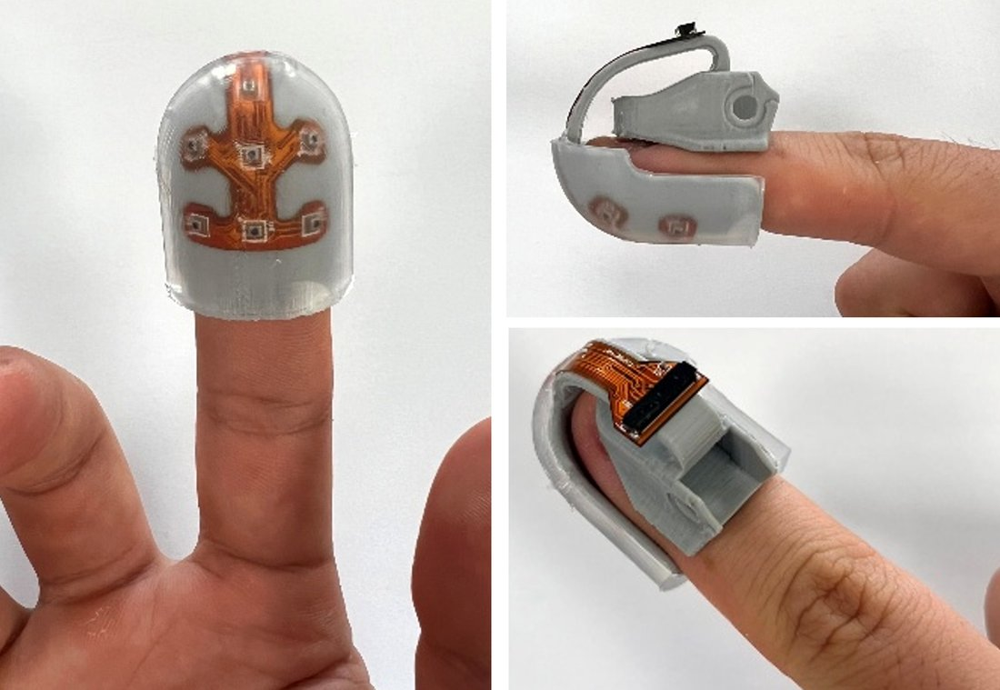
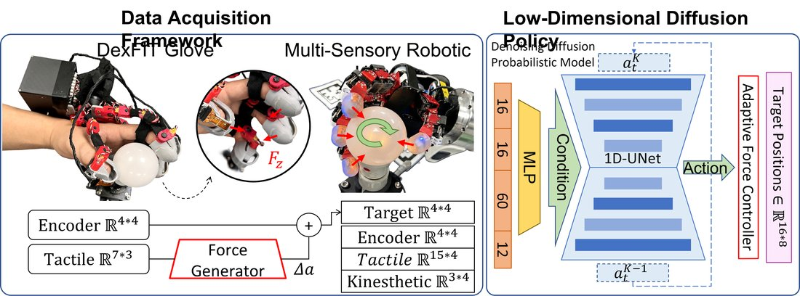
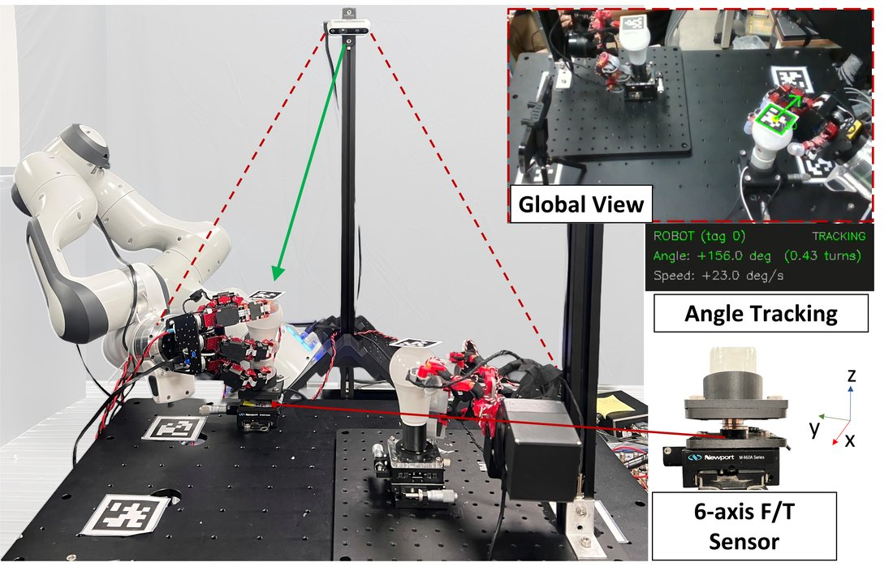

projects
Hardware, control stacks and learning pipelines for dexterous manipulation.

A 16-DoF wearable glove whose joint structure is mechanically identical to the target robot hand. Because the kinematics match one to one, retargeting disappears from the pipeline. Fingertip tactile readings drive a Force Generation module that adds supplementary joint flexion, so the robot squeezes in proportion to the operator's own pressure.
At deployment a vision-free Diffusion Policy runs on proprioceptive data alone, while an Adaptive Force Control module watches for stalls and compensates for rising friction. The full system reaches 100% success on in-hand light bulb rotation, 34.5% faster and with 16% less energy than position-only isomorphic control.





